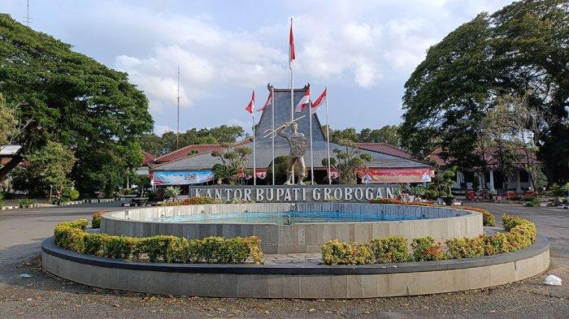
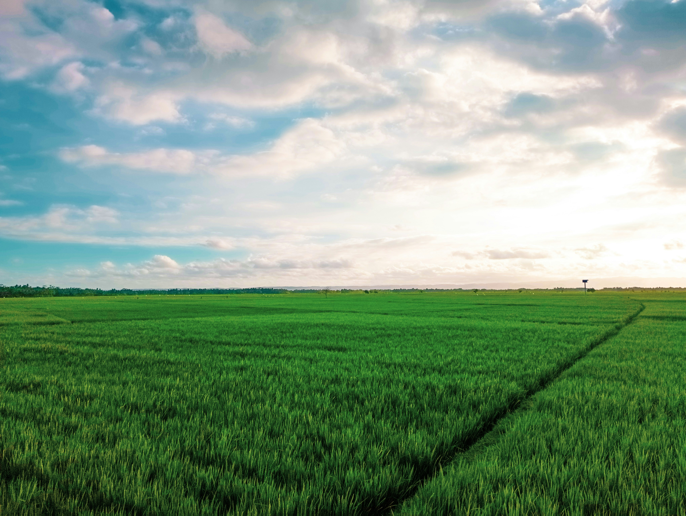
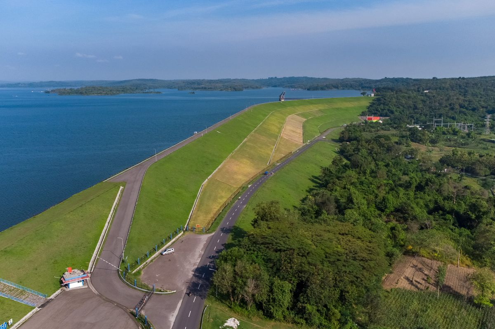

Sejarah
Kabupaten Grobogan merupakan salah satu kabupaten tertua di Jawa
Tengah. Nama Grobogan berasal dari kata "grobog" yang berarti tempat
penyimpanan air atau lumbung. Wilayah ini dahulu merupakan bagian
dari Kerajaan Mataram Kuno dan memiliki peran penting dalam sejarah
Jawa, terutama pada masa kerajaan-kerajaan Hindu-Buddha dan Islam.
Pada abad ke-17, Grobogan menjadi bagian dari wilayah Kasunanan
Surakarta setelah perjanjian Giyanti. Sejak saat itu, Grobogan
berkembang sebagai daerah agraris dengan potensi pertanian yang
sangat besar.
Selain dikenal sebagai lumbung pangan, Grobogan juga memiliki
berbagai situs sejarah dan budaya, seperti Candi Planggatan dan
sumber air Bledug Kuwu yang melegenda. Hari jadi Kabupaten Grobogan
diperingati setiap tanggal 4 Maret, menandai berdirinya pemerintahan
Grobogan secara resmi. Hingga kini, Grobogan terus berkembang dan
menjadi salah satu daerah penting di Jawa Tengah.

Geografis
Kabupaten Grobogan terletak di bagian timur Provinsi Jawa Tengah dan
merupakan kabupaten terluas di provinsi ini. Wilayah Grobogan
berbatasan dengan Kabupaten Demak, Kudus, Pati, Blora, Ngawi,
Sragen, Boyolali, dan Semarang. Secara geografis, Grobogan
didominasi oleh dataran rendah dan perbukitan kapur di bagian
selatan serta utara, dengan ketinggian rata-rata 50–200 meter di
atas permukaan laut.
Sungai terbesar yang mengalir di wilayah Grobogan adalah Sungai Lusi
dan Sungai Serang, yang menjadi sumber irigasi utama bagi pertanian.
Iklim di Grobogan termasuk tropis dengan dua musim, yaitu musim
hujan dan musim kemarau. Kondisi geografis ini sangat mendukung
Grobogan sebagai daerah agraris dan lumbung pangan di Jawa Tengah.

Wisata
Kabupaten Grobogan memiliki berbagai destinasi wisata menarik yang
patut dikunjungi. Salah satu yang paling terkenal adalah Bledug
Kuwu, sebuah fenomena alam berupa semburan lumpur panas yang unik
dan menjadi ikon wisata Grobogan. Selain itu, terdapat Waduk Kedung
Ombo yang menawarkan pemandangan indah dan berbagai aktivitas air.
Bledug Kuwu
Bledug Kuwu merupakan fenomena alam berupa semburan lumpur panas
yang terjadi secara terus-menerus. Lokasi ini menjadi daya tarik
wisatawan karena keunikannya dan dipercaya memiliki nilai sejarah
serta mitos oleh masyarakat sekitar.
Waduk Kedung Ombo

Waduk Kedung Ombo adalah waduk terbesar di Grobogan yang
menawarkan panorama alam indah dan berbagai aktivitas seperti
memancing, berperahu, dan wisata kuliner di sekitar waduk.